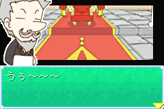

Majokko Cream-chan no Gokko Series 2 - Kisekae Angel (Japan)
Stateless / Passcode 💾 MultiBoot 🎮 4P Link
Cartridge Identity
- Game Code
BE2J(FamilyBE2)- Header Title
KISEKAEANGEL- Maker / Revision
BA/ rev0- ROM Size
- 8.0 MiB (8,388,608 B)
- Save Media
None / Unknown- SHA-256
60ac3e0a16c4e472baf7b82fb4dc28bac4fb4b1650e42c385d18df3040adc011- Engine / SDK Group
comm-012(31 families)
Screenshots

Link Cable & Multiplayer Communications
This title contains detected communication capabilities: 💾 MultiBoot 🎮 4P Link.
Detailed protocol specifications, SIO registers, Joybus commands, and MultiBoot sequences are documented in the Link & Multiplayer Reference.
- Multi-Player SIO (4P)
- 16-bit ring network · SIOCNT (
0x04000128) literals:0x0190a0,0x0191cc,0x0195bc· SIODATA32/SIOMULTI0 (0x04000120) literals:0x0191c8 - Single-Cart MultiBoot
- Single-Cartridge MultiBoot (Download Play) client/server handler · Thumb SWI 0x25 (
0xDF25):0x259c6a,0x691fac,0x6b87ec
Cartridge Storage Architecture: Stateless / Passcode
Zero non-volatile battery hardware: This cartridge PCB contains ROM only (no SRAM, Flash, or EEPROM chips). Progression is preserved via on-screen passcodes or session-only gameplay. No
.sav file is generated or required.
ROM Assets, Compression & Audio
- BIOS Compression
- LZ77 (
0x10): 0 streams · RLE (0x30): 0 streams - ROM Pointer Tables
- 67 tables (0 pointing to validated compressed streams)
- SDK Backup Tags
EEPROM_V124
Asset Map (formatkit.asset-map.v1)
Download BE2J-r0-60ac3e0a16c4e472.asset-map.json.gz (28,614 B (27.9 KiB)) Verified PASS · 15.40% coverage
| Metric | Bytes / Value | Entries |
|---|---|---|
| Identified | 32,544 B (31.8 KiB) (0.39%) | 204 |
| Mapped | 0 B (0.00%) | 0 |
| Opaque | 1,259,160 B (1.20 MiB) (15.01%) | 1 |
| Unknown | 7,096,904 B (6.77 MiB) (84.60%) | 196 |
| Total ROM Size | 8,388,608 B (8.00 MiB) | 401 |
| Coverage % | 15.40% | — |
| Entries w/ Code Refs | 220 / 401 (54.86%) | — |
Top Identified Formats: gfx.gba-palette (202 · 31,424 B (30.7 KiB)) · audio.m4a-song-table (1 · 928 B) · gba.rom-header (1 · 192 B)
Largest unknown Extents (Headerless / Custom Asset Candidates)
| Offset | Size | Shannon Entropy | Code Refs |
|---|---|---|---|
0x004C0034 | 655,204 B (639.8 KiB) | 5.467 bits/B | 0 |
0x0044FFF8 | 458,780 B (448.0 KiB) | 5.283 bits/B | 0 |
0x005AFFD8 | 458,688 B (447.9 KiB) | 5.367 bits/B | 0 |
0x00247F44 | 307,216 B (300.0 KiB) | 7.372 bits/B | 0 |
0x001B59F0 | 306,748 B (299.6 KiB) | 7.392 bits/B | 0 |
gzip -dk BE2J-r0-60ac3e0a16c4e472.asset-map.json.gz && gbakit map verify rom.gba BE2J-r0-60ac3e0a16c4e472.asset-map.json
gbakit assets export rom.gba --asset-map BE2J-r0-60ac3e0a16c4e472.asset-map.json -o out/Text, Fonts & Scene Data
- Primary Text Encoding
- 16-bit / UTF-16LE text (
26ASCII strings ·3Shift-JIS runs) - Font & VWF Indicators
- VWF Width Table 1bpp Font · BIOS SWIs: BitUnPack
0x10:6· LZ770x11/12:1· Huffman0x13:2· RLE0x14/15:3 - Scene & Packaging
6ROM pointer tables (≥32 entries,1≥200) ·206relativeu32TOCs ·292OAM metasprite hits
Password System
- Save Media
- Battery-Backed (EEPROM)
- Password Class
- Password UI Strings Detected (
password_ui_strings_only) - Password UI Strings
password
Hardware MMIO Subsystems
ppu_display0x8002b10,0x8005bfc,0x800652c